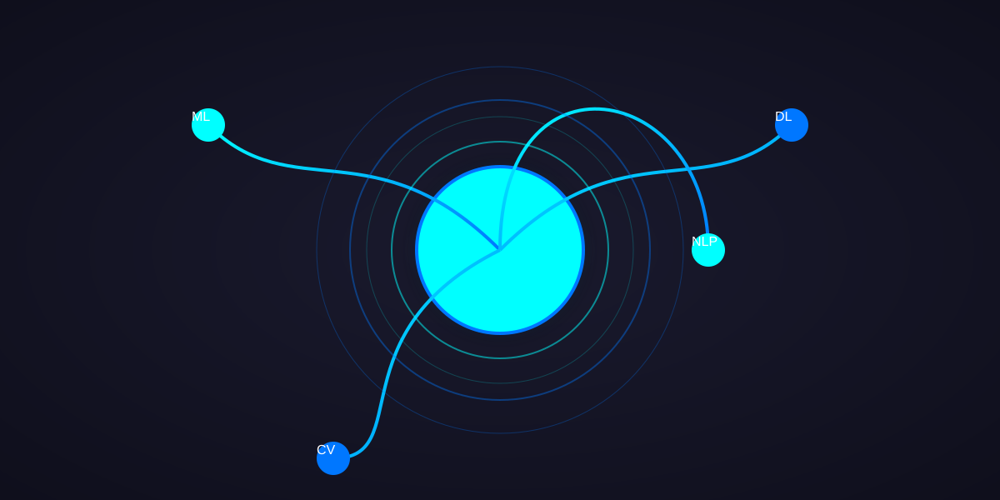
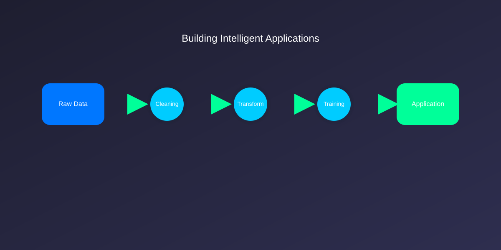
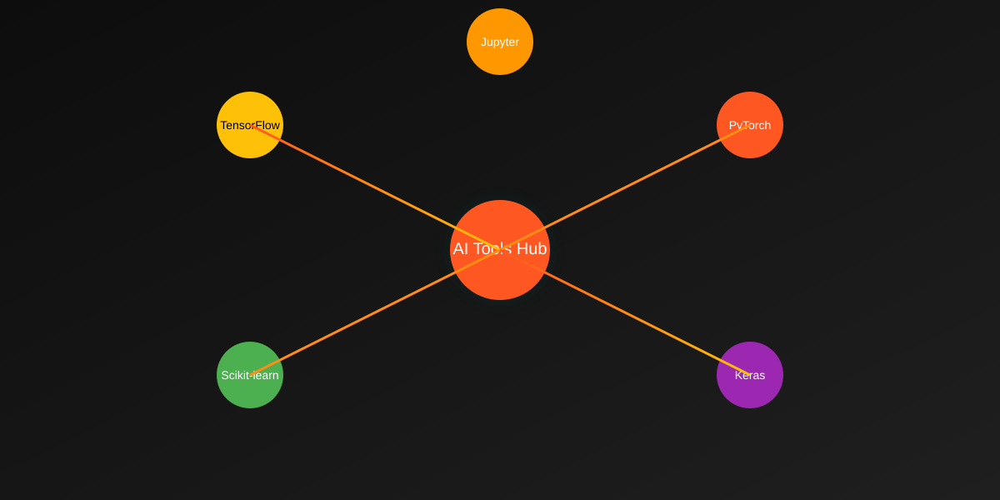
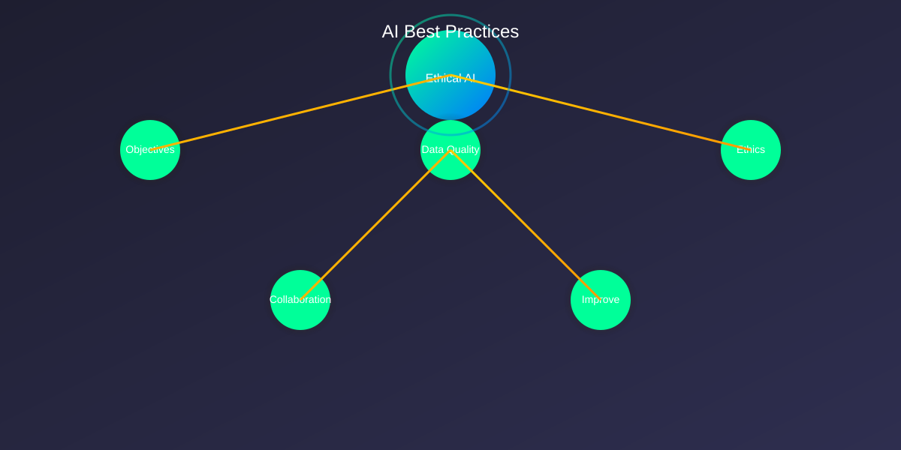
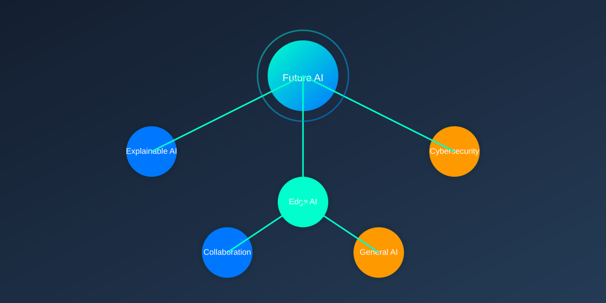
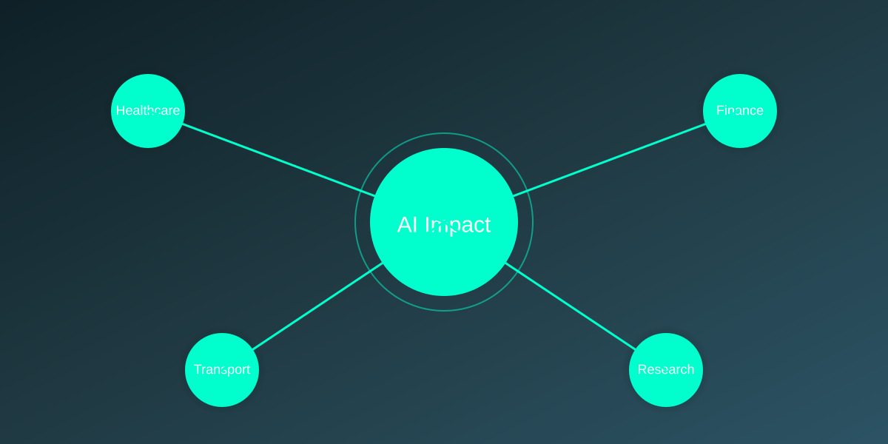

Table of Contents
1. Introduction to Artificial Intelligence

Artificial Intelligence refers to the simulation of human intelligence in machines that are programmed to think and learn like humans. These intelligent systems can perform tasks such as recognizing speech, making decisions, translating languages, and identifying images with remarkable accuracy and efficiency.
AI is broadly categorized into two types:
- Narrow AI (Weak AI): Designed to perform a specific task, such as voice recognition or recommendation systems.
- General AI (Strong AI): Possesses the ability to understand, learn, and apply intelligence across a wide range of tasks, similar to human cognitive abilities. General AI remains largely theoretical and is a subject of ongoing research.
2. A Brief History of AI

The concept of AI dates back to ancient myths and legends, but the formal study began in the mid-20th century. Key milestones include:
- 1956: The Dartmouth Conference, where the term "Artificial Intelligence" was coined.
- 1960s-70s: Development of early AI programs like ELIZA and Shakey the Robot.
- 1980s: Introduction of machine learning algorithms and expert systems.
- 1997: IBM's Deep Blue defeats chess champion Garry Kasparov.
- 2010s: Surge in deep learning and neural networks, leading to breakthroughs in image and speech recognition.
- 2020s: AI integration into various industries, ethical discussions, and advancements toward more generalized forms of intelligence.
3. Core Concepts in AI

Understanding AI requires familiarity with its foundational concepts. Here are some of the key areas:
Machine Learning
Machine Learning (ML) is a subset of AI that focuses on developing algorithms that enable computers to learn from and make decisions based on data. ML can be categorized into:
- Supervised Learning: The model is trained on labeled data.
- Unsupervised Learning: The model identifies patterns in unlabeled data.
- Reinforcement Learning: The model learns by interacting with an environment to achieve a goal.
Deep Learning
Deep Learning is a specialized branch of ML that uses neural networks with many layers (deep neural networks) to model complex patterns in data. It has been particularly successful in areas like image and speech recognition.
Natural Language Processing (NLP)
NLP enables machines to understand, interpret, and generate human language. Applications include language translation, sentiment analysis, and chatbots.
Computer Vision
Computer Vision allows machines to interpret and make decisions based on visual data. It is used in facial recognition, autonomous vehicles, and medical image analysis.
4. Applications of AI

AI's versatility has led to its adoption across various industries:
Healthcare
- Diagnostics: AI algorithms analyze medical images to detect diseases like cancer at early stages.
- Personalized Medicine: Tailoring treatments based on individual patient data.
- Robotic Surgery: Enhancing precision in surgical procedures.
Finance
- Fraud Detection: Identifying suspicious transactions in real-time.
- Algorithmic Trading: Making rapid trading decisions based on market data.
- Customer Service: AI-powered chatbots assisting clients with inquiries.
Transportation
- Autonomous Vehicles: Self-driving cars navigating complex environments.
- Traffic Management: Optimizing traffic flow to reduce congestion.
- Predictive Maintenance: Anticipating vehicle maintenance needs to prevent breakdowns.
Entertainment
- Content Recommendation: Suggesting movies, music, or articles based on user preferences.
- Game Development: Creating intelligent non-player characters (NPCs) for more immersive gaming experiences.
- Content Creation: Assisting in generating music, art, and literature.
5. Building Intelligent Applications

Creating intelligent applications involves several critical steps:
Identifying Use Cases
Determine the specific problem you aim to solve with AI. This could range from automating customer service to predicting market trends.
Data Collection and Preparation
AI models require large amounts of quality data. Steps include:
- Data Gathering: Collecting relevant data from various sources.
- Data Cleaning: Removing inconsistencies and errors.
- Data Transformation: Converting data into a suitable format for analysis.
Choosing the Right Algorithms
Select algorithms that best fit your problem. Common choices include:
- Linear Regression: For predicting continuous values.
- Decision Trees: For classification and regression tasks.
- Neural Networks: For complex pattern recognition.
Model Training and Evaluation
Train your model using the prepared data and evaluate its performance using metrics like accuracy, precision, recall, and F1-score.
Deployment and Maintenance
Deploy the model into a production environment and continuously monitor its performance. Regular updates and retraining may be necessary to maintain accuracy.
6. Tools and Frameworks

Several tools and frameworks facilitate AI development:
- TensorFlow: An open-source platform by Google for building and deploying ML models.
- PyTorch: A deep learning framework known for its flexibility and ease of use.
- scikit-learn: A Python library for machine learning with simple and efficient tools.
- Keras: A high-level neural networks API, running on top of TensorFlow.
- Jupyter Notebooks: An interactive environment for developing and sharing code and visualizations.
7. Best Practices in AI Development

To ensure successful AI projects, consider the following best practices:
- Define Clear Objectives: Understand the problem you are solving and set measurable goals.
- Ensure Data Quality: High-quality, relevant data is crucial for model performance.
- Maintain Ethical Standards: Address biases in data and ensure transparency in AI decision-making.
- Collaborate Across Disciplines: Combine expertise from data scientists, domain experts, and software engineers.
- Iterate and Improve: Continuously refine models based on feedback and performance metrics.
8. Future Trends in AI

AI continues to evolve, with several trends shaping its future:
- Explainable AI (XAI): Making AI decisions transparent and understandable to humans.
- Edge AI: Deploying AI models on devices at the edge of the network for faster processing.
- AI in Cybersecurity: Enhancing threat detection and response mechanisms.
- Human-AI Collaboration: Developing systems that work alongside humans to augment capabilities.
- Advancements in General AI: Progress towards more versatile and adaptable AI systems.
9. Conclusion

Artificial Intelligence holds immense potential to transform industries, improve efficiency, and solve complex problems. By understanding its fundamentals, leveraging the right tools, and adhering to best practices, developers and organizations can harness AI's power to build intelligent applications that drive innovation and create value. As AI technology continues to advance, staying informed and adaptable will be key to unlocking its full potential.
Back To Blog